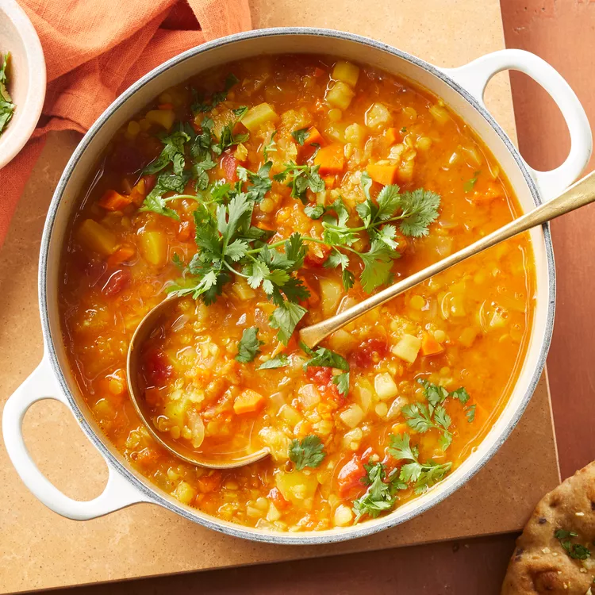
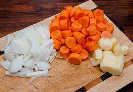
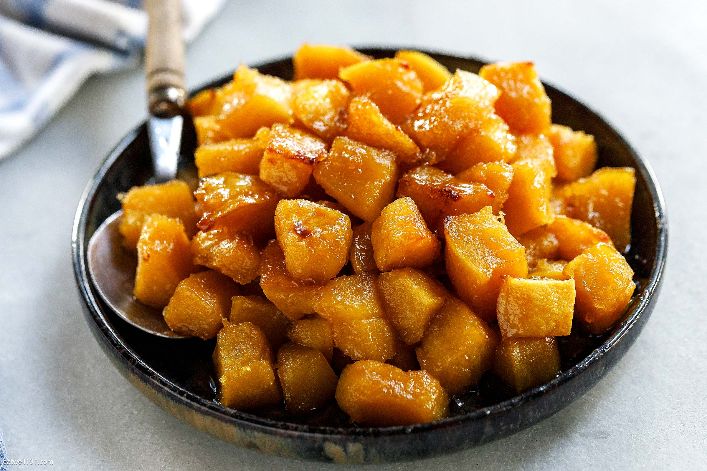
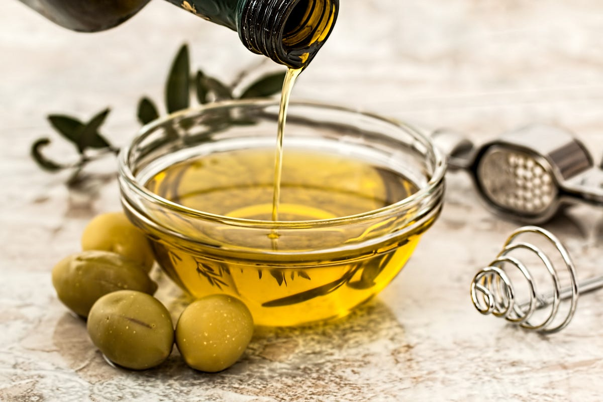
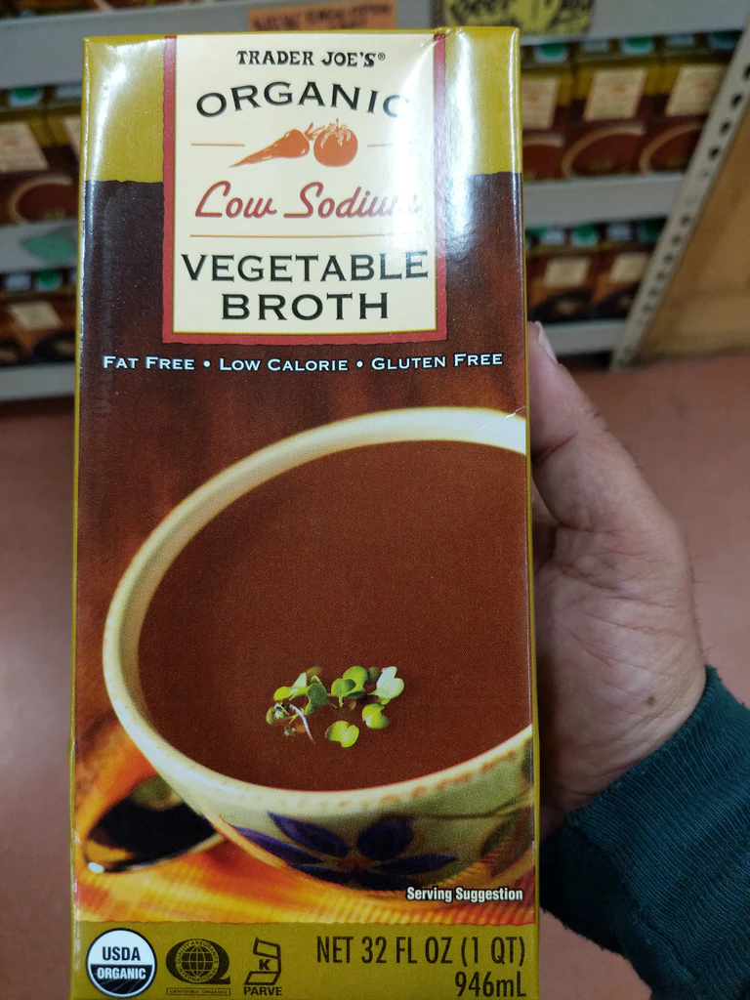
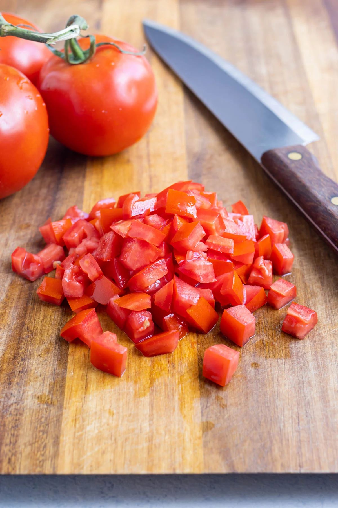
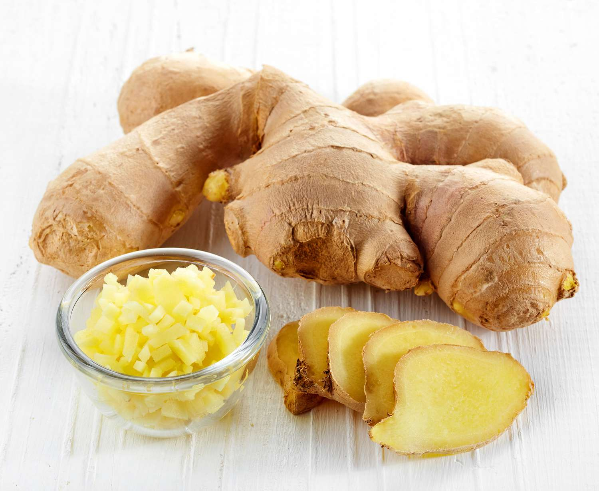
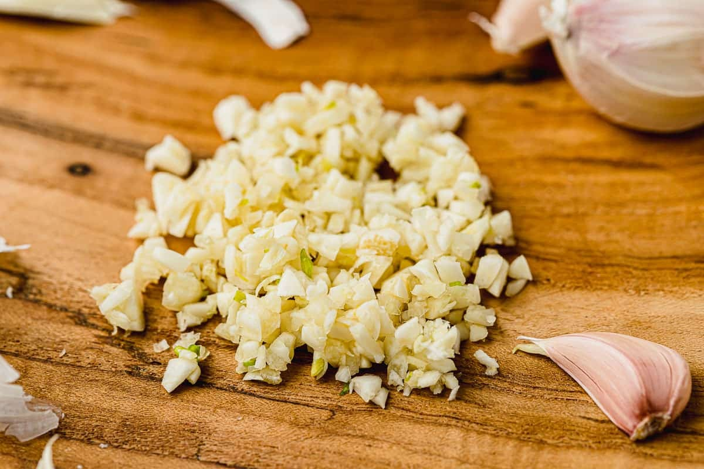
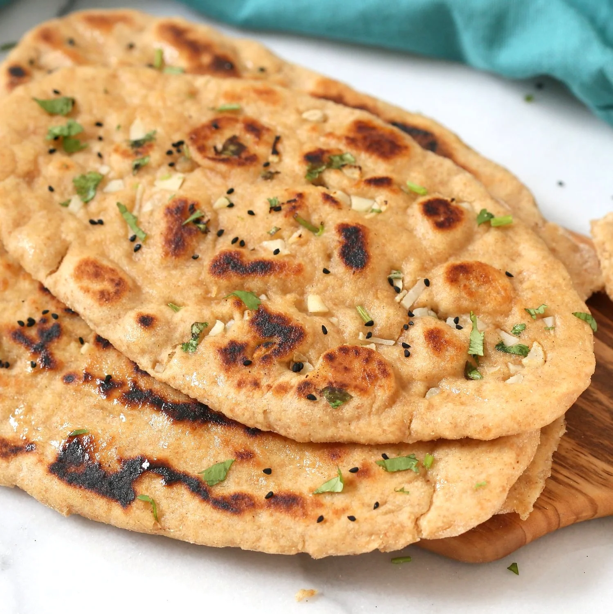

Vegetable Mulligatawny Soup



1 ONION , 2 CARROTS , 1 PARSNIP FINELY CHOPPED
4 cups peeled diced acorn squash or butternut squash
3 tbs OLIVE OIL
4 cups reduced-sodium vegetable broth 1 medium green apple, peeled and finely chopped
1 medium green apple, peeled and finely chopped

1 can no-salt-added diced tomatoes
1 teaspoon grated fresh ginger
3 cloves garlic, minced, divided
2 whole-wheat naan flatbreads, halvedServing Size: 4
Servings Per Recipe: 4
Serving Size: about 2 cups soup & 1/2 naan
Calories: 487
| Nutrient | Amount | % Daily Value * | Total Carbohydrate | 76g | 29% |
|---|---|---|
| Dietary Fiber | 14g | 50% |
| Total Sugars | 17g | 0% |
| Protein | 14g | 28% |
| Total Fat | 15g | 19% |
| Saturated Fat | 3g | 15% |
| Vitamin A | 864 mug | 3% |
| Vitamin C | 18mg | 20% |
| Vitamin E | 2mg | 13% |
| Folate | 128mcg | 32% |
| Sodium | 412mg | 18% |
| Calcium | 253mg | 19% |
| Iron | 5mg | 25% |
| Magnesium | 92mg | 22% |
| Potassium | 902mg | 19% |